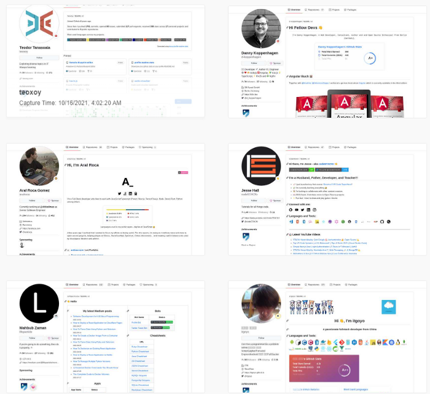

Github Profili İçin Readme Dosyası Oluşturma ve Özelleştirme
Temmuz 6, 2022
Merhabalar, bugün sizleri biraz kodlamadan uzak olan özelleştirme ve tasarıma yakın bir
gezintiye çıkarmak istiyorum. Kişisel olarak günlük yaşamımız
içerisinde sevdiğimiz renkler, sanatçılar, tasarımlar, filmler nasıl değişiyorsa “Neden bizi
anlatan bir yazı içeriği bize özel tasarlanmasın?”.
Nasıl olsa birbirimizden bizleri farklı kılan durumlardan biri de taşıdığımız estetik
kaygımız.
Şimdi belki tesadüfen burada buluşmuş olabiliriz. Fakat önemli değil, merak etme. Başından
itibaren olabildiğince sade ve anlaşılabilir anlatmaya çalışacağım.
Boyaları kap gel, bakalım gün sonunda neler olacak?
Readme Dosyası Nedir?
Readme dosyası aslında Github üzerinde yer alan ve proje depolarının (Repository) yanına
eklediğimiz genellikle kurulum, kullanım, geliştirme safhalarına
dair bilgiler verdiğimiz bir açıklama dosyasıdır. Burada bahsettiğim teknik kullanım için
bu
adrese
ve buradaki Medium
makale içeriğine bir bakabilirsin.
Fakat belirli bir süre önce Github herkese açık olarak profil oluşturmamızı ve paylaşmamızı
sağlayan Readme özelliğini duyurdu. Kısacası burada anlatacağım
Readme dosyasının amacı herkese açık özelleştirilmiş bir profil sağlayan bir tasarım
dosyası.
Örnek olarak benim oluşturmuş olduğum Readme
dosyama bir göz atabilirsin.
Şimdi dokümantasyona dayalı olmayan ve profil oluşturma amacı taşıyan bu Readme dosyası hakkında “Nasıl oluşturulur?”, “Nasıl özelleştirilebilir?”, “Hangi kaynaklardan yararlanılabilir?” gibi birçok soruyu duyar gibiyim. Sakin ol! Arkana yaslan, beraber bir bakalım.
Profil Özelliği İçin Readme Dosyası Nasıl Oluşturulur?
İlk olarak profil sayfamızda görüntülenmesi için Readme dosyamızı oluşturmalıyız. Bunun için kullanıcı adımız ile aynı ada sahip özel bir depo (Repsoitory) ve bir adet Markdown (.md) uzantılı bir Readme dosyası oluşturmalıyız. Adım adım göstermek gerekirse;
Github hesabınıza giriş yaptıktan ve ana sayfanıza geldikten sonra orta kısmın üstünde yer alan menü içerisinden “Repositories” kısmına tıklayın.
Açılan sayfa üzerinden yeni bir depo (Repository) oluşturma işlemini gerçekleştirmeliyiz. Bu sebeple yukarıda bulunan menünün altında yer alan “New” kısmına tıklıyoruz.
Şimdi açılan kısım içerisinde önemli tercihler yapmalıyız. İlk olarak Github sizlere yeni oluşturmak istediğiniz deponuz (Repository) için isim soracaktır. Buraya kendi kullanıcı adınızı girmelisiniz. Örnek vermek gerekirse benim kullanıcı adım “KaganCanSit” bu sebeple şu şekilde giriş yapıyorum;

!Not: Burada kırmızı gözükmesinin sebebi zaten benim hazır ve aynı ada sahip olan bir
tasarım dosyam bulunması. Fakat siz böyle bir hata almayacaksınız.
!Not 2: Profilinizde tasarım dosyanızın gözükebilmesi için bu kısım içerisine
kullanıcı adınızı kesinlikle girmelisiniz. Diğer durumlarda bu dosya
profil dosyanız olarak Github tarafından işleme alınmayacaktır. Ayrıca alt kısımda
göreceğiniz gibi Github sizlere bu konuda bildirim verecektir.
Daha sonrasında ise profil dosyanızın erişim özelliği herkese açık anlamına gelen “Public” seçeneği olmalıdır. Bunun sebebi eğer “Private” özel seçeneği seçerseniz dosyayı sadece siz görüntüleyebilirsiniz ve bu durumda profil dosyası oluşturmanız bir anlam ifade etmeyecektir.
Son adım olarak yukarıda da bahsettiğim Markdown uzantısına sahip olan ve bizlerin içerisine bilgilerimizi, tasarımlarımızı, görsel içeriklerimizi koyacak olduğumuz Readme dosyamızı eklemek. Bunun için “Readme dosyası ekle” (Add a README file) seçeneğini seçmeliyiz.
!Not: Eğer unutursanız üzülmeyin. Sadece açmış olduğunuz kod deposuna gidin. “New
File” diyerek README.md adıyla yeni bir dosya oluşturun.
Tüm aşamaları tamamladıysak “Create New Repository” diyerek işlemi tamamlayın. Burada
anlatmış olduğum adımları
Github
Docs içerisinden ayrıca inceleyebilirsin!
Şimdi özelleştirmek için Readme dosyamız hazır. İlk olarak sizleri küçük hazır bir taslak
ile karşılayacaktır. Biraz kurcalamanız yeterli.
Readme Dosyasını Özelleştirmek
Şimdi, her şey hazır olduğuna göre özelleştirmelerimize başlayabiliriz. Burada sizlerin
kişisel tercihleri farklı yönlerde olacaktır. Bu yüzden daha çok tasarım araçları ve
kaynakları üzerinden ilerleyeceğim.
Kendi adıma uğraştırıcı olsa da kişisel olarak kendi isteğim doğrultusunda özelleştirmeyi
seviyorum. Fakat “O kadar zaman ayırmak istemiyorum.” derseniz.
Hazır site araçları sayesinde de tasarım yapabilirsiniz. Bunun için bir sonraki başlık olan
“Hazır Site Üzerinden Tasarım” kısmına geçebilirsiniz.
Biraz İlham
Profilinizi özelleştirmeye başlamadan önce biraz ilham ve fikre ihtiyaç duyabilirsiniz. Bu
durum elbette çok normal bunun için sizlere
şu Github
deposunu ve
bu web sayfasını öneriyorum.
Bu iki link üzerinden diğer geliştiricilerin daha önce oluşturmuş olduğu Github Readme
dosyalarını görüntüleyebilir, inceleyebilirsiniz.
İkonlara dayalı, oyun, minimal, dynamic, gif gibi birçok çeşit mevcut. Burada bulunan örnek
tasarımlar ile uygun kombinasyonlar ve içerikler oluşturmanız mümkün.
Tek yapmanız gereken beğendiğiniz Readme dosyalarına erişmek ve açılan dosya içerisinden
“Blame” tıklayarak beğindiğiniz kısmın yazılış biçimine bakmak.
Bu biçimi kendinize özgü güncellemek ve geliştirmek.
Elbette burada tüm içeriği birebir aynı şekilde almak doğru olmayacaktır. Ayrıca zaten
kişiselleştirmek için özelleştirmelisiniz. Kendi kullanmak
istediğiniz görselleri, gifleri kolayca ekleyebilir, düzenleyebilirsiniz. Bu sebeple sadece
buradan Markdown kullanıma dair ipuçları almanız yeterli.

Profil İstatistiklerim Neler, Kaç Adet Kod Depom Var?
Bu sorulara dair görsel olarak araçları Markdown dosyanızın içerisine yerleştirebilirsiniz. Bunun için güzel bir depo önerim var. Şu adrese ilk olarak bir göz atın.
Bu depo (Repository) içerisinde sizlerin Github içerisinde aktifliğinize, dil tercihlerinize ve araçlarınıza dair metrikleri görsel olarak sunan birçok araç bulacaksınız. Bu araçları Markdown dosyasına kolaylıkla ekleyebilir. Renk, tema ve boyutlarını özelleştirebilirsiniz. Sadece kısaca göz atarak kullanım biçimini dikkatlice okumanız yeterli. Örneğin yukarıdaki stat eklentisinin eklenmesi için şöyle bir alıntı yeterli olacaktır.

Benim Profil İstatistiğimi Gösteren Örnek:

Profilim Kaç Kez Ziyaret Edildi? Özel Bildiri Butonları Oluşturabilir Miyim?
Bu gibi soruların cevaplarını vermek ve herkese gösterebilmek için ise git-badges ve Shields.io adlı siteler sizlere yol gösterecektir. Bir buton içerisinde bu bilgileri kapsayan küçük görsel eklentileri basit linkler aracılığıyla Markdown dosyanıza ekleyebilirsiniz.
Bu Siteler Haricinde Kendi Görsellerimi ve İçeriklerime Nasıl Yer Verebilirim?
Yukarıda yer vermiş olduğum siteler haricinde Canva (Banner Görsel İçerik, GIF Hazırlama),
Unsplash (Telifsiz Fotoğraf),
Freepik (Telifsiz Vektör, Fotoğraf),
GIPHY gibi sitelerden yararlanabilirsiniz.
Buradan almış olduğunuz alıntıları linkler aracılığıyla Readme adını verdiğimiz markdown
dosyanıza ekleyebilirsiniz.
NOT: Readme dosyanız içerisinde HTML, CSS, JavaScript gibi teknolojileri de
kullanabilirsiniz. Bu teknolojiler için örnekleri ise ilk giriş kısmında yer alan “İlham
Alın” kısmı altında yer vermiş olduğum örnek tasarımlara bakmanız yeterli.
Hazır Site Üzerinden Tasarım
README dosyanız içerisinde yer almasını istediğiniz kısımları doldurarak ve kullandığınız
araçları seçerek yavaşça ilerleyin.
Sosyal medya iletişim bilgilerinizi ve diğer bilgilerinizi paylaşmak isterseniz var olan
kısımlara kullanıcı adınızı doldurmanızı yeterli.
Son olarak sayfanın sonunda yer alan “Generete README” butonuna tıklayarak Markdown dosyası
içeriğini alın, ardından kendi kod deponuzun
içerisinde yer alan Readme dosyası içerisine yapıştırın.
Yukarıda yer vermiş olduğum siteler, araçların yardımıyla ve basit düzeyde Markdown
bilgisiyle rahatlıkla güzel bir Readme dosyası oluşturabilirsiniz.
Buraya kadar okuduğunuz ve incelediğiniz için teşekkür ederim. Umarın tasarımlarınıza
ilham verebilmiş, sizlere yardımcı olabilmişimdir. Yazım hataları vb.
durumlar ve sorularınız için lütfen bana ulaşmaktan çekinmeyin.
Sağlıcakla kalın…
Kaynakça
About
READMEs — GitHub Docs
Neden
README dosyasını eklemeliyiz ! | by nafi durmuş | Kodcular | Medium
abhisheknaiidu/awesome-github-profile-readme:
😎 A curated list of awesome GitHub Profile READMEs 📝
Awesome Github Profile
(zzetao.github.io)
Shields.io: Quality metadata badges for open
source projects
anuraghazra/github-readme-stats:
Dynamically generated stats for your github readmes
git-badges 🎉 | git-badges (pufler.dev)
GitHub Profile Readme
Generator | GitHub Profile Readme Generator (rahuldkjain.github.io)
Github
Bilgilendirme Sayfası